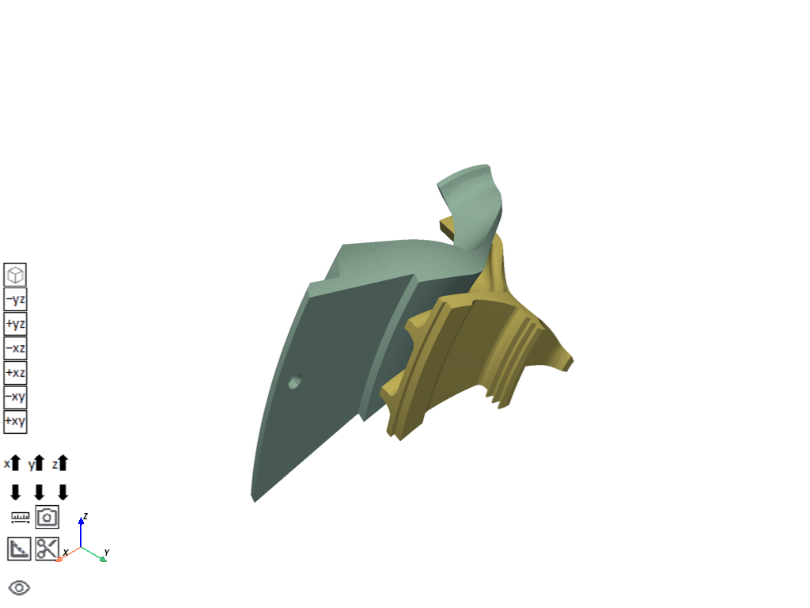

Note
Go to the end to download the full example code.
Centrifugal Impeller Analysis Using Cyclic Symmetry and Linear Perturbation#
The impeller blade assembly in this example is a subsystem of a gas turbine engine used in aerospace applications. The model consists of a shroud and an impeller blade assembly with a sector angle of 27.692 degrees. The full model is composed of 13 primary blades and splitters located at a distance of 1 mm from the rigid wall at the start of the analysis.
Coverage: Modal, perturbed prestressed modal with linear and nonlinear base static solution, full-harmonic are performed on the cyclic-sector model. Cyclic symmetry is applied. Pressure, rotational velocity and thermal boundary condition are applied.
## %%
# Import the necessary libraries
# ~~~~~~~~~~~~~~~~~~~~~~~~~~~~~~
from pathlib import Path
from typing import TYPE_CHECKING
from ansys.mechanical.core import App
from ansys.mechanical.core.examples import delete_downloads, download_file
from matplotlib import image as mpimg
from matplotlib import pyplot as plt
if TYPE_CHECKING:
import Ansys
Initialize the embedded application#
app = App(globals=globals(), version=251)
print(app)
Ansys Mechanical [Ansys Mechanical Enterprise]
Product Version:251
Software build date: 11/27/2024 09:34:44
Create functions to set camera and display images#
# Set the path for the output files (images, gifs, mechdat)
output_path = Path.cwd() / "out"
def display_image(
image_path: str,
pyplot_figsize_coordinates: tuple = (16, 9),
plot_xticks: list = [],
plot_yticks: list = [],
plot_axis: str = "off",
) -> None:
"""Display the image with the specified parameters.
Parameters
----------
image_path : str
The path to the image file to display.
pyplot_figsize_coordinates : tuple
The size of the figure in inches (width, height).
plot_xticks : list
The x-ticks to display on the plot.
plot_yticks : list
The y-ticks to display on the plot.
plot_axis : str
The axis visibility setting ('on' or 'off').
"""
# Set the figure size based on the coordinates specified
plt.figure(figsize=pyplot_figsize_coordinates)
# Read the image from the file into an array
image_path = str(output_path / image_path)
plt.imshow(mpimg.imread(image_path))
# Get or set the current tick locations and labels of the x-axis
plt.xticks(plot_xticks)
# Get or set the current tick locations and labels of the y-axis
plt.yticks(plot_yticks)
# Turn off the axis
plt.axis(plot_axis)
# Display the figure
plt.show()
Configure graphics for image export#
# Define the graphics and camera
graphics = app.Graphics
camera = graphics.Camera
# Set the camera orientation to the isometric view and set the camera to fit the model
camera.SetSpecificViewOrientation(ViewOrientationType.Iso)
camera.SetFit()
# Set the image export format and settings
image_export_format = GraphicsImageExportFormat.PNG
settings_720p = Ansys.Mechanical.Graphics.GraphicsImageExportSettings()
settings_720p.Resolution = (
Ansys.Mechanical.DataModel.Enums.GraphicsResolutionType.EnhancedResolution
)
settings_720p.Background = Ansys.Mechanical.DataModel.Enums.GraphicsBackgroundType.White
settings_720p.Width = 1280
settings_720p.Height = 720
settings_720p.CurrentGraphicsDisplay = False
Download and Import CDB File#
Download the CDB file from the specified URL and save it to a temporary directory. The CDB file is then imported into the Ansys Mechanical model using the Model Import API. The CDB file is a pre-existing model file that contains the geometry and mesh information for the analysis. Define the model
geometry_path = download_file("cyclic_sector_model.cdb", "pymechanical", "embedding")
model = app.Model
# Add the geometry import to the geometry import group
geometry_import_group = model.GeometryImportGroup
geometry_import = geometry_import_group.AddModelImport()
geometry_import.ModelImportSourceFilePath = geometry_path
geometry_import.UnitSystemTypeForImport = ModelImportUnitSystemType.UnitSystemMetricNMM
print(geometry_import.UnitSystemTypeForImport)
geometry_import.Import()
# Visualize the model in 3D
app.plot()

UnitSystemMetricNMM
Store all main tree nodes as variables#
Store the main tree nodes of the Ansys Mechanical model in variables for easy access. The variables include the model, geometry, mesh, named selections, connections, and coordinate systems.
GEOM = ExtAPI.DataModel.Project.Model.Geometry
MSH = ExtAPI.DataModel.Project.Model.Mesh
NS_GRP = ExtAPI.DataModel.Project.Model.NamedSelections
CONN_GRP = ExtAPI.DataModel.Project.Model.Connections
CS_GRP = ExtAPI.DataModel.Project.Model.CoordinateSystems
Define and Select NMM Units System#
Define the unit system for the model as Standard NMM (Newton, millimeter). This unit system is commonly used in engineering applications and is suitable for the analysis being performed.
ExtAPI.Application.ActiveUnitSystem = MechanicalUnitSystem.StandardNMM
Materials Assignment#
Assign materials to the geometry components of the model. The materials are defined in the Ansys Mechanical database and are assigned to the geometry components based on their names.
blade1 = GEOM.Children[1]
blade1.Material = "Structural Steel"
blade2 = GEOM.Children[2]
blade2.Material = "Structural Steel"
Coordinate System Definition#
Define a local coordinate system (LCS) for the model.
LCS1 = CS_GRP.AddCoordinateSystem()
LCS1.CoordinateSystemType = CoordinateSystemTypeEnum.Cylindrical
LCS1.OriginX = Quantity("0 [mm]")
LCS1.OriginY = Quantity("0 [mm]")
LCS1.OriginZ = Quantity("0 [mm]")
LCS1.SecondaryAxisDefineBy = CoordinateSystemAlignmentType.GlobalZ
Add Named Selections#
The named selections are used to specify the locations where loads and boundary conditions will be applied during the analysis.
NS_LOW = NS_GRP.AddNamedSelection()
NS_LOW.Name = "NS_LOW"
NS_LOW.ScopingMethod = GeometryDefineByType.Worksheet
GEN_CRT = NS_LOW.GenerationCriteria
CRT1 = Ansys.ACT.Automation.Mechanical.NamedSelectionCriterion()
CRT1.Active = True
CRT1.Action = SelectionActionType.Add
CRT1.EntityType = SelectionType.GeoFace
CRT1.Criterion = SelectionCriterionType.Size
CRT1.Operator = SelectionOperatorType.Equal
CRT1.Value = Quantity("607.35 [mm^2]")
GEN_CRT.Add(CRT1)
CRT2 = Ansys.ACT.Automation.Mechanical.NamedSelectionCriterion()
CRT2.Active = True
CRT2.Action = SelectionActionType.Filter
CRT2.EntityType = SelectionType.GeoFace
CRT2.Criterion = SelectionCriterionType.LocationZ
CRT2.Operator = SelectionOperatorType.Equal
CRT2.Value = Quantity("46.544 [mm]")
GEN_CRT.Add(CRT2)
CRT3 = Ansys.ACT.Automation.Mechanical.NamedSelectionCriterion()
CRT3.Active = True
CRT3.Action = SelectionActionType.Add
CRT3.EntityType = SelectionType.GeoFace
CRT3.Criterion = SelectionCriterionType.Size
CRT3.Operator = SelectionOperatorType.Equal
CRT3.Value = Quantity("997.65 [mm^2]")
GEN_CRT.Add(CRT3)
CRT4 = Ansys.ACT.Automation.Mechanical.NamedSelectionCriterion()
CRT4.Active = True
CRT4.Action = SelectionActionType.Filter
CRT4.EntityType = SelectionType.GeoFace
CRT4.Criterion = SelectionCriterionType.LocationZ
CRT4.Operator = SelectionOperatorType.GreaterThan
CRT4.Value = Quantity("21 [mm]")
GEN_CRT.Add(CRT4)
NS_LOW.Activate()
NS_LOW.Generate()
NS_HIGH = NS_GRP.AddNamedSelection()
NS_HIGH.Name = "NS_LOW"
NS_HIGH.ScopingMethod = GeometryDefineByType.Worksheet
GEN_CRT = NS_HIGH.GenerationCriteria
CRT1 = Ansys.ACT.Automation.Mechanical.NamedSelectionCriterion()
CRT1.Active = True
CRT1.Action = SelectionActionType.Add
CRT1.EntityType = SelectionType.GeoFace
CRT1.Criterion = SelectionCriterionType.Size
CRT1.Operator = SelectionOperatorType.Equal
CRT1.Value = Quantity("607.35 [mm^2]")
GEN_CRT.Add(CRT1)
CRT2 = Ansys.ACT.Automation.Mechanical.NamedSelectionCriterion()
CRT2.Active = True
CRT2.Action = SelectionActionType.Filter
CRT2.EntityType = SelectionType.GeoFace
CRT2.Criterion = SelectionCriterionType.LocationZ
CRT2.Operator = SelectionOperatorType.Equal
CRT2.Value = Quantity("24.348 [mm]")
GEN_CRT.Add(CRT2)
CRT3 = Ansys.ACT.Automation.Mechanical.NamedSelectionCriterion()
CRT3.Active = True
CRT3.Action = SelectionActionType.Add
CRT3.EntityType = SelectionType.GeoFace
CRT3.Criterion = SelectionCriterionType.Size
CRT3.Operator = SelectionOperatorType.Equal
CRT3.Value = Quantity("997.65 [mm^2]")
GEN_CRT.Add(CRT3)
CRT4 = Ansys.ACT.Automation.Mechanical.NamedSelectionCriterion()
CRT4.Active = True
CRT4.Action = SelectionActionType.Filter
CRT4.EntityType = SelectionType.GeoFace
CRT4.Criterion = SelectionCriterionType.LocationX
CRT4.Operator = SelectionOperatorType.GreaterThan
CRT4.Value = Quantity("13 [mm]")
GEN_CRT.Add(CRT4)
NS_HIGH.Activate()
NS_HIGH.Generate()
NS_PRES = NS_GRP.AddNamedSelection()
NS_PRES.Name = "NS_PRES"
NS_PRES.ScopingMethod = GeometryDefineByType.Worksheet
GEN_CRT = NS_PRES.GenerationCriteria
CRT1 = Ansys.ACT.Automation.Mechanical.NamedSelectionCriterion()
CRT1.Active = True
CRT1.Action = SelectionActionType.Add
CRT1.EntityType = SelectionType.GeoFace
CRT1.Criterion = SelectionCriterionType.Size
CRT1.Operator = SelectionOperatorType.Equal
CRT1.Value = Quantity("2423.7 [mm^2]")
GEN_CRT.Add(CRT1)
CRT2 = Ansys.ACT.Automation.Mechanical.NamedSelectionCriterion()
CRT2.Active = True
CRT2.Action = SelectionActionType.Add
CRT2.EntityType = SelectionType.GeoFace
CRT2.Criterion = SelectionCriterionType.Size
CRT2.Operator = SelectionOperatorType.Equal
CRT2.Value = Quantity("101.11 [mm^2]")
GEN_CRT.Add(CRT2)
NS_PRES.Activate()
NS_PRES.Generate()
NS_BODIES = NS_GRP.AddNamedSelection()
NS_BODIES.Name = "NS_BODIES"
NS_BODIES.ScopingMethod = GeometryDefineByType.Worksheet
GEN_CRT = NS_BODIES.GenerationCriteria
CRT1 = Ansys.ACT.Automation.Mechanical.NamedSelectionCriterion()
CRT1.Active = True
CRT1.Action = SelectionActionType.Add
CRT1.EntityType = SelectionType.GeoBody
CRT1.Criterion = SelectionCriterionType.Size
CRT1.Operator = SelectionOperatorType.GreaterThan
CRT1.Value = Quantity("1 [mm^3]")
GEN_CRT.Add(CRT1)
NS_BODIES.Activate()
NS_BODIES.Generate()
NS_RESP_VERTEX = NS_GRP.AddNamedSelection()
NS_RESP_VERTEX.Name = "NS_RESP_VERTEX"
NS_RESP_VERTEX.ScopingMethod = GeometryDefineByType.Worksheet
GEN_CRT = NS_RESP_VERTEX.GenerationCriteria
CRT1 = Ansys.ACT.Automation.Mechanical.NamedSelectionCriterion()
CRT1.Active = True
CRT1.Action = SelectionActionType.Add
CRT1.EntityType = SelectionType.GeoVertex
CRT1.Criterion = SelectionCriterionType.LocationX
CRT1.Operator = SelectionOperatorType.Equal
CRT1.Value = Quantity("96.3 [mm]")
GEN_CRT.Add(CRT1)
NS_RESP_VERTEX.Activate()
NS_RESP_VERTEX.Generate()
Add and Define Premeshed Cyclic Region#
Add a symmetry region to the model to define the cyclic symmetry boundary conditions. The symmetry region is defined by specifying the low and high boundary locations,the coordinate system, and the number of sectors. The symmetry region allows for the analysis of a smaller portion of the model while accounting for the cyclic nature of the full model.
model = app.Model
SYMM = model.AddSymmetry()
SYMMETRY_REGION = SYMM.AddPreMeshedCyclicRegion()
SYMMETRY_REGION.LowBoundaryLocation = NS_LOW
SYMMETRY_REGION.HighBoundaryLocation = NS_HIGH
SYMMETRY_REGION.CoordinateSystem = LCS1
SYMMETRY_REGION.NumberOfSectors = 13
Define Analysis#
The analysis type is set to Modal, which is used to determine the natural frequencies and mode shapes of the system. The analysis is performed in a cyclic symmetry environment, which allows for the analysis of a smaller portion of the model while accounting for the cyclic nature of the full model. The analysis is defined with a maximum of 2 modes to find and a harmonic index range of 0 to 6. The harmonic index is used to specify the frequency range for the analysis. The analysis settings and solution settings are defined for the modal analysis.
MODAL01 = model.AddModalAnalysis()
# Solve first standalone Modal analysis
ANA_SETTING_MODAL01 = model.Analyses[0].AnalysisSettings
SOLN_MODAL01 = model.Analyses[0].Solution
ANA_SETTING_MODAL01.MaximumModesToFind = 2
ANA_SETTING_MODAL01.HarmonicIndexRange = CyclicHarmonicIndex.Manual
ANA_SETTING_MODAL01.MaximumHarmonicIndex = 6
Insert results#
Insert results for the modal analysis. The results include the total deformation, which is used to visualize the mode shapes of the system. The total deformation is calculated based on the modal analysis results.
TOT_DEF_MODAL01 = SOLN_MODAL01.AddTotalDeformation()
Solve Modal Analysis#
Solve the modal analysis to obtain the natural frequencies and mode shapes of the system. The solution is performed for the specified number of modes and harmonic indices. The results are stored in the solution object for further analysis and visualization.
app.save_as(str(output_path / "before_solve_prestressed.mechdb"), overwrite=True)
SOLN_MODAL01.Solve(True)
SOLN_MODAL01_SS = SOLN_MODAL01.Status
app.save_as(str(output_path / "after_solve_prestressed.mechdb"), overwrite=True)
H0_FRQ1_MODAL01 = TOT_DEF_MODAL01.TabularData["Frequency"][0]
H0_FRQ2_MODAL01 = TOT_DEF_MODAL01.TabularData["Frequency"][1]
H1_FRQ1_MODAL01 = TOT_DEF_MODAL01.TabularData["Frequency"][2]
H1_FRQ2_MODAL01 = TOT_DEF_MODAL01.TabularData["Frequency"][3]
H2_FRQ1_MODAL01 = TOT_DEF_MODAL01.TabularData["Frequency"][4]
H2_FRQ2_MODAL01 = TOT_DEF_MODAL01.TabularData["Frequency"][5]
H3_FRQ1_MODAL01 = TOT_DEF_MODAL01.TabularData["Frequency"][6]
H3_FRQ2_MODAL01 = TOT_DEF_MODAL01.TabularData["Frequency"][7]
H4_FRQ1_MODAL01 = TOT_DEF_MODAL01.TabularData["Frequency"][8]
H4_FRQ2_MODAL01 = TOT_DEF_MODAL01.TabularData["Frequency"][9]
Traceback (most recent call last):
File "/__w/pymechanical-embedding-examples/pymechanical-embedding-examples/examples/02_technology_showcase/prestressed_modal_cyclic_symmetry_analysis.py", line 419, in <module>
assert str(SOLN_MODAL01_SS) == "Done", "Solution status is not 'Done'"
^^^^^^^^^^^^^^^^^^^^^^^^^^^^^^
AssertionError: Solution status is not 'Done'
Add Static Structural Analysis#
The static structural analysis is used to analyze the response of the system under static loading conditions. The analysis is performed in a cyclic symmetry environment, which allows for the analysis of a smaller portion of the model while accounting for the cyclic nature of the full model. The analysis settings and solution settings are defined for the static structural analysis. The analysis is set to be a linear static analysis, which means that the response of the system is assumed to be linear with respect to the applied loads.
STAT_STRUC01 = model.AddStaticStructuralAnalysis()
ANA_SETTING_STAT_STRUC01 = Model.Analyses[1].AnalysisSettings
SOLN_STAT_STRUC01 = Model.Analyses[1].Solution
Apply Loads and Boundary Conditions#
Apply pressure, rotational velocity and thermal boundary conditions
PRES_STAT_STRUC01 = STAT_STRUC01.AddPressure()
PRES_STAT_STRUC01.Location = NS_PRES
PRES_STAT_STRUC01.Magnitude.Output.DiscreteValues = [Quantity("20 [MPa]")]
ROT_VEL_STAT_STRUC01 = STAT_STRUC01.AddRotationalVelocity()
ROT_VEL_STAT_STRUC01.DefineBy = LoadDefineBy.Components
ROT_VEL_STAT_STRUC01.CoordinateSystem = LCS1
ROT_VEL_STAT_STRUC01.ZComponent.Output.DiscreteValues = [Quantity("3000 [rad sec^-1]")]
THERM_COND_STRUC01 = STAT_STRUC01.AddThermalCondition()
THERM_COND_STRUC01.Location = NS_BODIES
THERM_COND_STRUC01.Magnitude.Output.DiscreteValues = [Quantity("50 [C]")]
Add Modal to perform prestress modal analysis#
Setup and solve prestress modal analysis The prestress modal analysis is used to analyze the response of the system under prestressed conditions.
MODAL02 = model.AddModalAnalysis()
Pre_Stress02 = MODAL02.Children[0]
Pre_Stress02.PreStressICEnvironment = Model.Analyses[1]
ANA_SETTING_MODAL02 = Model.Analyses[2].AnalysisSettings
SOLN_MODAL02 = Model.Analyses[2].Solution
ANA_SETTING_MODAL02.MaximumModesToFind = 2
ANA_SETTING_MODAL02.HarmonicIndexRange = CyclicHarmonicIndex.Manual
ANA_SETTING_MODAL02.MaximumHarmonicIndex = 6
Insert results#
Insert results for the prestress modal analysis.
TOT_DEF_MODAL02 = SOLN_MODAL02.AddTotalDeformation()
Solve Prestressed Modal Analysis#
Solve the prestress modal analysis to obtain the natural frequencies and mode shapes of the system under prestressed conditions. The solution is performed for the specified number of modes and harmonic indices. The results are stored in the solution object for further analysis and visualization.
SOLN_MODAL02.Solve(True)
SOLN_MODAL02_SS = SOLN_MODAL02.Status
H0_FRQ1_MODAL02 = TOT_DEF_MODAL02.TabularData["Frequency"][0]
H0_FRQ2_MODAL02 = TOT_DEF_MODAL02.TabularData["Frequency"][1]
H1_FRQ1_MODAL02 = TOT_DEF_MODAL02.TabularData["Frequency"][2]
H1_FRQ2_MODAL02 = TOT_DEF_MODAL02.TabularData["Frequency"][3]
H2_FRQ1_MODAL02 = TOT_DEF_MODAL02.TabularData["Frequency"][4]
H2_FRQ2_MODAL02 = TOT_DEF_MODAL02.TabularData["Frequency"][5]
H3_FRQ1_MODAL02 = TOT_DEF_MODAL02.TabularData["Frequency"][6]
H3_FRQ2_MODAL02 = TOT_DEF_MODAL02.TabularData["Frequency"][7]
H4_FRQ1_MODAL02 = TOT_DEF_MODAL02.TabularData["Frequency"][8]
H4_FRQ2_MODAL02 = TOT_DEF_MODAL02.TabularData["Frequency"][9]
Add Static Structural to perform Non-linear Static Analysis#
Setup Non-linear Static Structural Analysis The non-linear static analysis is used to analyze the response of the system under non-linear loading conditions.
STAT_STRUC02 = model.AddStaticStructuralAnalysis()
ANA_SETTING_STAT_STRUC02 = Model.Analyses[3].AnalysisSettings
SOLN_STAT_STRUC02 = Model.Analyses[3].Solution
Turn on large deflection option#
This option is required for the non-linear static analysis to account for large displacements and rotations.
ANA_SETTING_STAT_STRUC02.LargeDeflection = True
Apply Loads and Boundary Conditions#
Apply pressure, rotational velocity and thermal boundary conditions
PRES_STAT_STRUC02 = STAT_STRUC02.AddPressure()
PRES_STAT_STRUC02.Location = NS_PRES
PRES_STAT_STRUC02.Magnitude.Output.DiscreteValues = [Quantity("20 [MPa]")]
ROT_VEL_STAT_STRUC02 = STAT_STRUC02.AddRotationalVelocity()
ROT_VEL_STAT_STRUC02.DefineBy = LoadDefineBy.Components
ROT_VEL_STAT_STRUC02.CoordinateSystem = LCS1
ROT_VEL_STAT_STRUC02.ZComponent.Output.DiscreteValues = [Quantity("6000 [rad sec^-1]")]
THERM_COND_STRUC02 = STAT_STRUC02.AddThermalCondition()
THERM_COND_STRUC02.Location = NS_BODIES
THERM_COND_STRUC02.Magnitude.Output.DiscreteValues = [Quantity("50 [C]")]
Add modal to perform prestress modal analysis#
Setup and solve modal with prestress from non-linear static analysis
MODAL03 = model.AddModalAnalysis()
Pre_Stress03 = MODAL03.Children[0]
Pre_Stress03.PreStressICEnvironment = Model.Analyses[3]
ANA_SETTING_MODAL03 = Model.Analyses[4].AnalysisSettings
SOLN_MODAL03 = Model.Analyses[4].Solution
ANA_SETTING_MODAL03.MaximumModesToFind = 2
ANA_SETTING_MODAL03.HarmonicIndexRange = CyclicHarmonicIndex.Manual
ANA_SETTING_MODAL03.MaximumHarmonicIndex = 6
Insert results#
Insert results for the prestress modal analysis. The results include the total deformation, which is used to visualize the mode shapes of the system.
TOT_DEF_MODAL03 = SOLN_MODAL03.AddTotalDeformation()
Solve Prestressed Modal Analysis#
Solve the prestress modal analysis to obtain the natural frequencies and mode shapes of the system under prestressed conditions. The solution is performed for the specified number of modes and harmonic indices. The results are stored in the solution object for further analysis and visualization.
SOLN_MODAL03.Solve(True)
SOLN_MODAL03_SS = SOLN_MODAL03.Status
H0_FRQ1_MODAL03 = TOT_DEF_MODAL03.TabularData["Frequency"][0]
H0_FRQ2_MODAL03 = TOT_DEF_MODAL03.TabularData["Frequency"][1]
H1_FRQ1_MODAL03 = TOT_DEF_MODAL03.TabularData["Frequency"][2]
H1_FRQ2_MODAL03 = TOT_DEF_MODAL03.TabularData["Frequency"][3]
H2_FRQ1_MODAL03 = TOT_DEF_MODAL03.TabularData["Frequency"][4]
H2_FRQ2_MODAL03 = TOT_DEF_MODAL03.TabularData["Frequency"][5]
H3_FRQ1_MODAL03 = TOT_DEF_MODAL03.TabularData["Frequency"][6]
H3_FRQ2_MODAL03 = TOT_DEF_MODAL03.TabularData["Frequency"][7]
H4_FRQ1_MODAL03 = TOT_DEF_MODAL03.TabularData["Frequency"][8]
H4_FRQ2_MODAL03 = TOT_DEF_MODAL03.TabularData["Frequency"][9]
Add Harmonic Response Analysis#
Setup and Solve Standalone FULL Harmonic Analysis The harmonic response analysis is used to analyze the response of the system under harmonic loading conditions.
HARM_RESP01 = model.AddHarmonicResponseAnalysis()
ANA_SETTING_HARM_RESP01 = Model.Analyses[5].AnalysisSettings
SOLN_HARM_RESP01 = Model.Analyses[5].Solution
Specify the frequency range for the harmonic response analysis#
ANA_SETTING_HARM_RESP01.RangeMinimum = Quantity("1200 [Hz]")
ANA_SETTING_HARM_RESP01.RangeMaximum = Quantity("5500 [Hz]")
ANA_SETTING_HARM_RESP01.SolutionIntervals = 10
Specify Full Harmonic Response Analysis Method#
The full harmonic response analysis method is used to analyze the response of the system under harmonic loading conditions. The method is specified as Full, which means that the analysis will consider the full frequency range specified above.
ANA_SETTING_HARM_RESP01.SolutionMethod = HarmonicMethod.Full
Apply Structural Damping Coefficient#
Structural damping coefficient is used to account for energy dissipation in the material during dynamic loading.
ANA_SETTING_HARM_RESP01.StructuralDampingCoefficient = 0.02
Apply Loads and Boundary Conditions#
Apply Pressure
PRES_HARM_RESP01 = HARM_RESP01.AddPressure()
PRES_HARM_RESP01.Location = NS_PRES
PRES_HARM_RESP01.Magnitude.Output.DiscreteValues = [Quantity("20 [MPa]")]
Insert results#
Insert results for the harmonic response analysis. The results include the total deformation, which is used to visualize the response of the system under harmonic loading conditions. The total deformation is calculated based on the harmonic response analysis.. The results are stored in the solution object for further analysis and visualization.
FRQ_RES_DEF_HARM_RESP01 = SOLN_HARM_RESP01.AddDeformationFrequencyResponse()
FRQ_RES_DEF_HARM_RESP01.Location = NS_RESP_VERTEX
FRQ_RES_DEF_HARM_RESP01.NormalOrientation = NormalOrientationType.YAxis
SOLN_HARM_RESP01.Activate()
TOT_DEF4_1 = SOLN_HARM_RESP01.AddTotalDeformation()
TOT_DEF4_1.Frequency = Quantity(3000, "Hz")
TOT_DEF4_1.Amplitude = True
TOT_DEF4_1.Name = "Total Deformation"
TOT_DEF4_1.CreateParameter("Maximum")
SOLN_HARM_RESP01.Activate()
TOT_DEF4_2 = SOLN_HARM_RESP01.AddTotalDeformation()
TOT_DEF4_2.Frequency = Quantity(2500, "Hz")
TOT_DEF4_2.Amplitude = True
TOT_DEF4_2.Name = "Total Deformation 2"
TOT_DEF4_2.CreateParameter("Maximum")
Solve Full Harmonic Response Analysis#
Solve the full harmonic response analysis to obtain the frequency response of the system.
SOLN_HARM_RESP01.Solve(True)
SOLN_HARM_RESP01_SS = SOLN_HARM_RESP01.Status
Post-process results#
Activate the results and set the view to isometric
TOT_DEF4_1.Activate()
camera.SetFit()
camera.SetFit()
graphics.ExportImage(
str(output_path / "deform_frequency_response.png"),
image_export_format,
settings_720p,
)
display_image("deform_frequency_response.png")
app.save_as(str(output_path / "final.mechdb"), overwrite=True)
# Close the app
app.close()
# delete example file
delete_downloads()
Total running time of the script: (0 minutes 10.601 seconds)